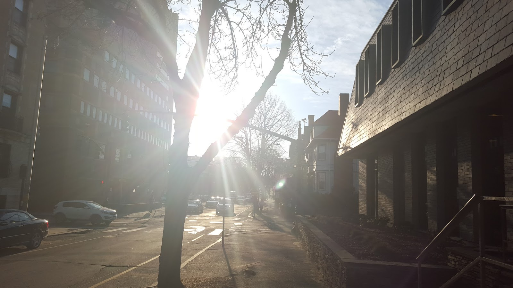

April 25, 2016
Lately, I've been pondering a variety of questions relating to change as a person. When I look back on myself from say, four years ago, I can say with confidence that I have changed. My mindset, motivations, and ideals have all shifted considerably. And yet from a daily perspective, I can't say what it was exactly that changed me. Instead, my mind is drawn to specific events and conversations, and I use those to organize and understand how I arrived at my current self.

But isn't there something artificial in that kind of organization? If it is indeed dramatic, yet isolated, singular events that led me to where I am now, then on what can I really base any sense of identity? Who is to say that tomorrow I won't encounter another of these "life-changing" events that will shift my soul yet again? And how then do I account for this sensation that there is some common thread running through my self development?
I guess there is a distinction between moving forward and change. As I think about change, I find that my model is like a set of roads, each with its own unique sights, bumps, and bruises. As one moves forward down a road, life changes and may even seem unrecognizable. And yet to the walker, somehow this change, though confusing, does not erase the fact that he/she is still on the same road. There is an internal consistency to the road through all of its changes. Perhaps this is the change of moving forward.
A different kind of change happens when the road diverges. Sometimes the divergence is from the main road, and one can choose to continue walking the same path or move into a slightly different one. Other times, one encounters a crossroad to the current road, marking a significant change in direction. Finally, there are forks. Here, one is forced to leave his/her comfortably trodden road and embark in a new direction.
Perhaps this is why I feel confused as to how exactly I have changed. My road has twisted and turned, yet it is heading in the same general direction.
And yet somewhere along the way, I have become increasingly aware of crossroads and divergences that had previously been invisible. And all along the way, I fear the day when I will encounter a fork.
My friends, interests, and goals... How can I know if they should follow me down a new road? And if I feel that I am stagnating in one road, can I change it myself?
Or will I simply move forward forever?